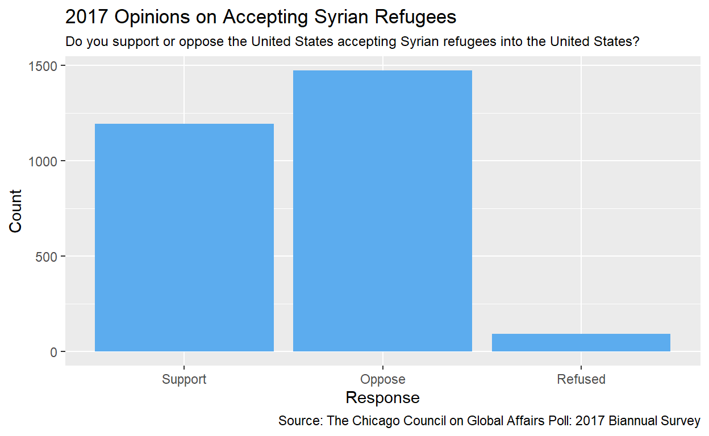

My final project
syria <- survey2017 |>
drop_na(q267_1) |>
select(caseid, xchicago, xmidwest, q267_1)
syria_responses <- c("Support", "Oppose", "Refused")
syria_plot <- syria |>
ggplot(mapping = aes(x = factor(q267_1, syria_responses))) +
geom_bar(fill = "steelblue2") +
labs(
x = "Response",
y = "Count",
title = "2017 Opinions on Accepting Syrian Refugees",
subtitle = "Do you support or oppose the United States accepting Syrian refugees into the United States?",
caption = "Source: The Chicago Council on Global Affairs Poll: 2017 Biannual Survey"
) +
theme(
plot.subtitle = element_text(size = 9)
)
syria_plot
head(survey2017) caseid tm_start tm_finis duration weight1 weight2
1 2 6/28/2017 19:14 6/28/2017 19:41 27 0.4749 NA
2 4 6/28/2017 19:19 6/28/2017 19:29 9 2.0205 1.9250
3 5 6/28/2017 19:19 6/28/2017 23:00 220 0.8524 NA
4 8 6/28/2017 19:20 6/28/2017 19:39 19 0.8180 NA
5 9 6/28/2017 19:21 6/28/2017 19:39 18 0.6594 NA
6 11 6/28/2017 19:22 6/28/2017 19:40 17 1.1337 1.2841
weight3 weight4 weight5 weight6 xchicago
1 NA 0.4872 0.4751 0.5703 General Population Sample
2 0.6379 NA NA 0.4041 General Population Sample
3 0.6687 0.8591 NA 0.8074 General Population Sample
4 NA 0.7760 1.0191 1.1107 General Population Sample
5 NA 0.6369 0.6483 0.8009 General Population Sample
6 0.7115 NA NA 0.8358 General Population Sample
xmidwest xmilleni qflag_ch
1 Non-Midwestern States Sample Non-Millennial Sample Qualified
2 Midwestern States Sample Millennial Sample Qualified
3 Non-Midwestern States Sample Millennial Sample Qualified
4 Non-Midwestern States Sample Non-Millennial Sample Qualified
5 Non-Midwestern States Sample Non-Millennial Sample Qualified
6 Midwestern States Sample Millennial Sample Qualified
xphispan xusr
1 No, I am not Urban
2 No, I am not Rural
3 No, I am not Rural
4 No, I am not Suburban
5 No, I am not Rural
6 No, I am not Rural
xmsc
1 In the center city of an MSA
2 Outside the center city of an MSA but inside the county containing the center city
3 Outside the center city of an MSA but inside the county containing the center city
4 Not in an MSA
5 Inside a suburban county of the MSA
6 Outside the center city of an MSA but inside the county containing the center city
xcbsamet dov_q2b_
1 Lubbock, TX First Statement Shown
2 St. Louis, MO-IL Sixth Statement Shown
3 Los Angeles-Long Beach-Anaheim, CA Second Statement Shown
4 Other/Undefined Fifth Statement Shown
5 Philadelphia-Camden-Wilmington, PA-NJ-DE-MD Second Statement Shown
6 Monroe, MI Second Statement Shown
dov_q2_1 dov_q2_2 dov_q2_3
1 Fourth Statement Shown Sixth Statement Shown Fifth Statement Shown
2 Fourth Statement Shown Second Statement Shown Third Statement Shown
3 Fifth Statement Shown Third Statement Shown Sixth Statement Shown
4 Fourth Statement Shown Second Statement Shown Sixth Statement Shown
5 Third Statement Shown Sixth Statement Shown Fifth Statement Shown
6 Fourth Statement Shown Third Statement Shown First Statement Shown
dov_q2_4 dov_q2_5
1 Third Statement Shown Second Statement Shown
2 Fifth Statement Shown First Statement Shown
3 Fourth Statement Shown First Statement Shown
4 Third Statement Shown First Statement Shown
5 Fourth Statement Shown First Statement Shown
6 Fifth Statement Shown Sixth Statement Shown
q2b
1 Cable TV news broadcasts (For example: CNN, Fox News, or MSNBC)
2 Facebook, Twitter and other social media
3 Blogs and other websites
4 Network TV news broadcasts (For example: ABC, CBS, or NBC)
5 Cable TV news broadcasts (For example: CNN, Fox News, or MSNBC)
6 Blogs and other websites
Q2b_Followup q2b_foll q2bfollo q2bfol_1 q2bfol_2 q2bfol_3 q2bfol_4
1 Fox No No No No No
2 Facebook No No No No No
3 drudge report No No No No Yes
4 Nbc No No No No No
5 MSNBC No No No No No
6 mlive.com No No No No No
q2bfol_5 q2bfol_6 q2bfol_7 q2bfol_8 q2bfol_9 q2bfo_10 q2bfo_11
1 No Yes No No No No No
2 Yes No No No No No No
3 No No No No No No No
4 No No No No No No Yes
5 No No No No No Yes No
6 No No No No No No No
q2bfo_12 q2bfo_13 q2bfo_14 q2bfo_15 q2bfo_16 q2bfo_17 q2bfo_18
1 No No No No No No No
2 No No No No No No No
3 No No No No No No No
4 No No No No No No No
5 No No No No No No No
6 No No No No No No No
q2bfo_19 q2bfo_20 q2bfo_21 q2bfo_22 q2bfo_23 q2bfo_24 q2bfo_25
1 No No No No No No No
2 No No No No No No No
3 No No No No No No No
4 No No No No No No No
5 No No No No No No No
6 No No No No Yes No No
q2bfo_26 q3_1 q4 q3 dov_q5_n
1 No 4 Right direction Active part Seventh Statement Shown
2 No 4 Wrong track Stay out First Statement Shown
3 No 4 Right direction Stay out Fourth Statement Shown
4 No 4 Right direction Stay out Second Statement Shown
5 No 4 Wrong track Active part Nineth Statement Shown
6 No 4 Wrong track Active part Tenth Statement Shown
dov_q5_1 dov_q5_2
1 Fifth Statement Shown Second Statement Shown
2 Third Statement Shown Nineth Statement Shown
3 Sixth Statement Shown Fifth Statement Shown
4 Third Statement Shown Sixth Statement Shown
5 Fifth Statement Shown Third Statement Shown
6 Nineth Statement Shown Third Statement Shown
dov_q5_3 dov_q5_4
1 Fourth Statement Shown First Statement Shown
2 Fourth Statement Shown Second Statement Shown
3 Third Statement Shown Seventh Statement Shown
4 Fifth Statement Shown Fourth Statement Shown
5 Second Statement Shown Seventh Statement Shown
6 First Statement Shown Fifth Statement Shown
dov_q5_5 dov_q5_6
1 Tenth Statement Shown Third Statement Shown
2 Sixth Statement Shown Tenth Statement Shown
3 Tenth Statement Shown Nineth Statement Shown
4 Eighth Statement Shown First Statement Shown
5 Sixth Statement Shown Fourth Statement Shown
6 Eighth Statement Shown Second Statement Shown
dov_q5_7 dov_q5_8
1 Nineth Statement Shown Eighth Statement Shown
2 Fifth Statement Shown Seventh Statement Shown
3 Second Statement Shown First Statement Shown
4 Seventh Statement Shown Nineth Statement Shown
5 Eighth Statement Shown Tenth Statement Shown
6 Sixth Statement Shown Fourth Statement Shown
dov_q5_9 q5_new_5
1 Sixth Statement Shown Critical threat
2 Eighth Statement Shown Not an important threat
3 Eighth Statement Shown Important but not critical threat
4 Tenth Statement Shown Critical threat
5 First Statement Shown Not an important threat
6 Seventh Statement Shown Important but not critical threat
q5_new_1 q5_new_2
1 Important but not critical threat Critical threat
2 Critical threat Critical threat
3 Important but not critical threat Important but not critical threat
4 Critical threat Critical threat
5 Critical threat Critical threat
6 Important but not critical threat Critical threat
q5_new_3 q5_new_4
1 Critical threat Important but not critical threat
2 Important but not critical threat Important but not critical threat
3 Critical threat Important but not critical threat
4 Critical threat Critical threat
5 Critical threat Critical threat
6 Critical threat Important but not critical threat
q5_new_6 q5_new_7
1 Important but not critical threat Critical threat
2 Important but not critical threat Critical threat
3 Important but not critical threat Important but not critical threat
4 Critical threat Critical threat
5 Critical threat Critical threat
6 Important but not critical threat Critical threat
q5_new_8 q5_new_9
1 Important but not critical threat Critical threat
2 Critical threat Important but not critical threat
3 Important but not critical threat Important but not critical threat
4 Critical threat Critical threat
5 Critical threat Critical threat
6 Critical threat Important but not critical threat
q5_ne_10
1 Important but not critical threat
2 Critical threat
3 Important but not critical threat
4 Critical threat
5 Critical threat
6 Critical threat
q516b
1 Damage to US infrastructure
2 Theft of Americans\x92 personal information and finances
3 Damage to US infrastructure
4 Theft of classified government information
5 Damage to US infrastructure
6 Damage to US infrastructure
dov_hung dov_q7_4
1 Combating World Hunger Shown First Statement Shown
2 Providing Famine Relief Shown Fifth Statement Shown
3 Combating World Hunger Shown Fourth Statement Shown
4 Combating World Hunger Shown Eighth Statement Shown
5 Providing Famine Relief Shown Fourth Statement Shown
6 Combating World Hunger Shown Nineth Statement Shown
dov_q7_1 dov_q7_5
1 Sixth Statement Shown Nineth Statement Shown
2 Third Statement Shown Seventh Statement Shown
3 Second Statement Shown Sixth Statement Shown
4 Fifth Statement Shown First Statement Shown
5 Sixth Statement Shown Seventh Statement Shown
6 Fourth Statement Shown Third Statement Shown
dov_q7_2 dov_q7_3
1 Third Statement Shown Second Statement Shown
2 Tenth Statement Shown Second Statement Shown
3 Third Statement Shown Seventh Statement Shown
4 Second Statement Shown Third Statement Shown
5 Nineth Statement Shown Third Statement Shown
6 Sixth Statement Shown First Statement Shown
dov_q7_6 dov_q7_8
1 Fourth Statement Shown
2 Eighth Statement Shown
3 First Statement Shown
4 Nineth Statement Shown
5 Tenth Statement Shown
6 Fifth Statement Shown
dov_q7_9 dov_q_10
1 Eighth Statement Shown Seventh Statement Shown
2 Sixth Statement Shown Fourth Statement Shown
3 Fifth Statement Shown Nineth Statement Shown
4 Tenth Statement Shown Fourth Statement Shown
5 Fifth Statement Shown Second Statement Shown
6 Seventh Statement Shown Second Statement Shown
dov_q7_7 dov_q_11 q7_4a
1 Tenth Statement Shown Fifth Statement Shown Very important
2 Nineth Statement Shown First Statement Shown Not important at all
3 Tenth Statement Shown Eighth Statement Shown Somewhat important
4 Sixth Statement Shown Seventh Statement Shown Very important
5 Eighth Statement Shown First Statement Shown Very important
6 Eighth Statement Shown Tenth Statement Shown Somewhat important
q7_4b q7_5 q7_10
1 Very important Very important Very important
2 Somewhat important Very important Somewhat important
3 Somewhat important Somewhat important Somewhat important
4 Very important Very important Very important
5 Very important Very important Very important
6 Somewhat important Somewhat important Somewhat important
q7_11 q7_12 q7_12b
1 Very important Very important
2 Somewhat important Very important
3 Somewhat important Somewhat important
4 Somewhat important Somewhat important
5 Very important Very important
6 Somewhat important Somewhat important
q7_19 q7_23 q7_7
1 Very important Somewhat important Very important
2 Somewhat important Very important Very important
3 Somewhat important Somewhat important Somewhat important
4 Very important Very important Very important
5 Very important Very important Very important
6 Somewhat important Somewhat important Very important
q7_16 q67a q67b dov_q8_2
1 Very important A major role A major role Sixth Statement Shown
2 Very important A minor role A major role Fourth Statement Shown
3 Somewhat important A minor role A major role Sixth Statement Shown
4 Somewhat important A major role A minor role Fourth Statement Shown
5 Somewhat important A major role A major role First Statement Shown
6 Somewhat important A major role A major role Fifth Statement Shown
dov_q8_3 dov_q8_4
1 Tenth Statement Shown Second Statement Shown
2 Seventh Statement Shown Sixth Statement Shown
3 Seventh Statement Shown Fourth Statement Shown
4 Sixth Statement Shown Nineth Statement Shown
5 Second Statement Shown Nineth Statement Shown
6 Fourth Statement Shown Eighth Statement Shown
dov_q8_5 dov_q8_6
1 Third Statement Shown Fourth Statement Shown
2 Nineth Statement Shown Eighth Statement Shown
3 Third Statement Shown Second Statement Shown
4 Second Statement Shown Eighth Statement Shown
5 Seventh Statement Shown Sixth Statement Shown
6 Seventh Statement Shown Sixth Statement Shown
dov_q8_9 dov_q8_7
1 Nineth Statement Shown Seventh Statement Shown
2 First Statement Shown Third Statement Shown
3 First Statement Shown Fifth Statement Shown
4 Third Statement Shown Seventh Statement Shown
5 Eighth Statement Shown Fourth Statement Shown
6 First Statement Shown Second Statement Shown
dov_q8_8 dov_q8_1 dov_q_12
1 Eighth Statement Shown Fifth Statement Shown First Statement Shown
2 Second Statement Shown Tenth Statement Shown Fifth Statement Shown
3 Eighth Statement Shown Tenth Statement Shown Nineth Statement Shown
4 Fifth Statement Shown Tenth Statement Shown First Statement Shown
5 Tenth Statement Shown Fifth Statement Shown Third Statement Shown
6 Third Statement Shown Tenth Statement Shown Nineth Statement Shown
q8_2 q8_3 q8_4
1 Very effective Very effective Not very effective
2 Not very effective Not very effective Somewhat effective
3 Somewhat effective Very effective Somewhat effective
4 Very effective Somewhat effective Very effective
5 Somewhat effective Somewhat effective Very effective
6 Not very effective Not very effective Somewhat effective
q8_5 q8_6 q8_9
1 Very effective Very effective Very effective
2 Very effective Very effective Very effective
3 Somewhat effective Somewhat effective Not very effective
4 Very effective Very effective Very effective
5 Very effective Somewhat effective Very effective
6 Somewhat effective Somewhat effective Somewhat effective
q8_7 q8_8 q8_14
1 Very effective Very effective Very effective
2 Very effective Somewhat effective Not effective at all
3 Somewhat effective Somewhat effective Somewhat effective
4 Somewhat effective Somewhat effective Very effective
5 Very effective Somewhat effective Not very effective
6 Not very effective Not very effective Not very effective
q8_15 q8_2_net q8_3_net q8_4_net
1 Somewhat effective Effective Effective Not effective
2 Very effective Not effective Not effective Effective
3 Somewhat effective Effective Effective Effective
4 Very effective Effective Effective Effective
5 Somewhat effective Effective Effective Effective
6 Somewhat effective Not effective Not effective Effective
q8_5_net q8_6_net q8_7_net q8_8_net q8_9_net
1 Effective Effective Effective Effective Effective
2 Effective Effective Effective Effective Effective
3 Effective Effective Effective Effective Not effective
4 Effective Effective Effective Effective Effective
5 Effective Effective Effective Effective Effective
6 Effective Effective Not effective Not effective Effective
q8_14_ne q8_15_ne dov_q130
1 Effective Effective Second Statement Shown
2 Not effective Effective Second Statement Shown
3 Effective Effective Second Statement Shown
4 Effective Effective Eighth Statement Shown
5 Not effective Effective Sixth Statement Shown
6 Not effective Effective First Statement Shown
dov_q1_1 dov_q1_2
1 Eighth Statement Shown Nineth Statement Shown
2 Seventh Statement Shown Fifth Statement Shown
3 First Statement Shown Eighth Statement Shown
4 Third Statement Shown Fifth Statement Shown
5 Fifth Statement Shown Nineth Statement Shown
6 Sixth Statement Shown Seventh Statement Shown
dov_q1_3 dov_q1_4
1 Seventh Statement Shown Fifth Statement Shown
2 Third Statement Shown Sixth Statement Shown
3 Third Statement Shown Fourth Statement Shown
4 Seventh Statement Shown Nineth Statement Shown
5 First Statement Shown Seventh Statement Shown
6 Nineth Statement Shown Fifth Statement Shown
dov_q1_5 dov_q1_6
1 First Statement Shown Sixth Statement Shown
2 Fourth Statement Shown Nineth Statement Shown
3 Sixth Statement Shown Nineth Statement Shown
4 Fourth Statement Shown Second Statement Shown
5 Second Statement Shown Fourth Statement Shown
6 Fourth Statement Shown Eighth Statement Shown
dov_q1_7 dov_q1_8 q130_1
1 Third Statement Shown Fourth Statement Shown A great deal
2 First Statement Shown Eighth Statement Shown No confidence at all
3 Seventh Statement Shown Fifth Statement Shown A great deal
4 Sixth Statement Shown First Statement Shown A fair amount
5 Eighth Statement Shown Third Statement Shown A fair amount
6 Third Statement Shown Second Statement Shown Not very much
q130_2 q130_3 q130_4
1 A fair amount A fair amount Not very much
2 No confidence at all A great deal No confidence at all
3 A fair amount A fair amount Not very much
4 A fair amount A fair amount Not very much
5 Not very much A fair amount Not very much
6 A fair amount A fair amount A fair amount
q130_5 q130_6 q130_7
1 No confidence at all Not very much A fair amount
2 A great deal A great deal No confidence at all
3 Not very much Not very much A fair amount
4 A fair amount Not very much A fair amount
5 A fair amount Not very much No confidence at all
6 Not very much Not very much A fair amount
q130_8 q130_9 q130_1_n
1 No confidence at all No confidence at all Great deal/fair amount
2 No confidence at all A great deal Not very much/none
3 A fair amount No confidence at all Great deal/fair amount
4 No confidence at all No confidence at all Great deal/fair amount
5 A fair amount A fair amount Great deal/fair amount
6 A great deal A great deal Not very much/none
q130_2_n q130_3_n
1 Great deal/fair amount Great deal/fair amount
2 Not very much/none Great deal/fair amount
3 Great deal/fair amount Great deal/fair amount
4 Great deal/fair amount Great deal/fair amount
5 Not very much/none Great deal/fair amount
6 Great deal/fair amount Great deal/fair amount
q130_4_n q130_5_n
1 Not very much/none Not very much/none
2 Not very much/none Great deal/fair amount
3 Not very much/none Not very much/none
4 Not very much/none Great deal/fair amount
5 Not very much/none Great deal/fair amount
6 Great deal/fair amount Not very much/none
q130_6_n q130_7_n
1 Not very much/none Great deal/fair amount
2 Great deal/fair amount Not very much/none
3 Not very much/none Great deal/fair amount
4 Not very much/none Great deal/fair amount
5 Not very much/none Not very much/none
6 Not very much/none Great deal/fair amount
q130_8_n q130_9_n
1 Not very much/none Not very much/none
2 Not very much/none Great deal/fair amount
3 Great deal/fair amount Not very much/none
4 Not very much/none Not very much/none
5 Great deal/fair amount Great deal/fair amount
6 Great deal/fair amount Great deal/fair amount
dov_q110 dov_q1_9
1 Third Statement Shown First Statement Shown
2 Sixth Statement Shown Third Statement Shown
3 First Statement Shown Sixth Statement Shown
4 Fourth Statement Shown Fifth Statement Shown
5 Third Statement Shown Sixth Statement Shown
6 Sixth Statement Shown Fourth Statement Shown
dov_q_13 dov_q_14
1 Fourth Statement Shown Sixth Statement Shown
2 Fourth Statement Shown Second Statement Shown
3 Third Statement Shown Fourth Statement Shown
4 Second Statement Shown Sixth Statement Shown
5 First Statement Shown Fifth Statement Shown
6 Third Statement Shown First Statement Shown
dov_q_15 dov_q_16 q110_1
1 Second Statement Shown Fifth Statement Shown Very effective
2 Fifth Statement Shown First Statement Shown Very effective
3 Fifth Statement Shown Second Statement Shown Somewhat effective
4 First Statement Shown Third Statement Shown Somewhat ineffective
5 Second Statement Shown Fourth Statement Shown Somewhat effective
6 Fifth Statement Shown Second Statement Shown Somewhat effective
q110_2 q110_3 q110_4
1 Very effective Very effective Somewhat effective
2 Very effective Somewhat ineffective Very ineffective\xa0
3 Somewhat effective Somewhat effective Somewhat ineffective
4 Somewhat effective Somewhat effective Very ineffective\xa0
5 Somewhat effective Somewhat effective Somewhat ineffective
6 Somewhat effective Somewhat effective Somewhat effective
q110_5 q110_6 q110_1_n q110_2_n
1 Somewhat effective Very ineffective\xa0 Effective Effective
2 Very effective Very effective Effective Effective
3 Somewhat ineffective Somewhat ineffective Effective Effective
4 Somewhat effective Somewhat ineffective Not effective Effective
5 Somewhat effective Somewhat effective Effective Effective
6 Somewhat effective Somewhat effective Effective Effective
q110_3_n q110_4_n q110_5_n q110_6_n
1 Effective Effective Effective Not effective
2 Not effective Not effective Effective Effective
3 Effective Not effective Not effective Not effective
4 Effective Not effective Effective Not effective
5 Effective Not effective Effective Effective
6 Effective Effective Effective Effective
q11_new q21
1 Play a shared leadership role The greatest country in the world
2 Play a shared leadership role No greater than other nations
3 Play a shared leadership role The greatest country in the world
4 Play a shared leadership role The greatest country in the world
5 Play a shared leadership role No greater than other nations
6 Play a shared leadership role No greater than other nations
q15 dov_q25_ dov_q2_6
1 Worse off Sixth Statement Shown Third Statement Shown
2 Worse off Fifth Statement Shown Fourth Statement Shown
3 Worse off Third Statement Shown Fifth Statement Shown
4 Worse off Second Statement Shown Fifth Statement Shown
5 Worse off Second Statement Shown First Statement Shown
6 Worse off Third Statement Shown Fourth Statement Shown
dov_q2_7 dov_q2_8
1 Second Statement Shown Fifth Statement Shown
2 Sixth Statement Shown Third Statement Shown
3 Second Statement Shown First Statement Shown
4 Fourth Statement Shown Sixth Statement Shown
5 Sixth Statement Shown Fourth Statement Shown
6 Fifth Statement Shown Second Statement Shown
dov_q2_9 dov_q_17 q25_1
1 First Statement Shown Fourth Statement Shown Kept about the same
2 First Statement Shown Second Statement Shown Expanded
3 Fourth Statement Shown Sixth Statement Shown Kept about the same
4 First Statement Shown Third Statement Shown Expanded
5 Fifth Statement Shown Third Statement Shown Expanded
6 First Statement Shown Sixth Statement Shown Expanded
q25_2 q25_3 q25_4 q25_5 q25_6
1 Expanded Expanded Not sure Cut back Not sure
2 Cut back Expanded Cut back Expanded Expanded
3 Expanded Kept about the same Cut back Cut back Cut back
4 Refused Expanded Cut back Cut back Expanded
5 Cut back Expanded Cut back Expanded Expanded
6 Cut back Kept about the same Cut back Cut back Kept about the same
dov_q12_ dov_q_18
1 Nineth Statement Shown Fifth Statement Shown
2 Seventh Statement Shown First Statement Shown
3 Second Statement Shown Sixth Statement Shown
4 Fourth Statement Shown Sixth Statement Shown
5 Fifth Statement Shown First Statement Shown
6 Fifth Statement Shown Seventh Statement Shown
dov_q_19 dov_q_20
1 First Statement Shown Eighth Statement Shown
2 Second Statement Shown Fifth Statement Shown
3 Fifth Statement Shown Fourth Statement Shown
4 First Statement Shown Third Statement Shown
5 Third Statement Shown Nineth Statement Shown
6 Fourth Statement Shown Sixth Statement Shown
dov_q_21 dov_q_22
1 Sixth Statement Shown Second Statement Shown
2 Nineth Statement Shown Third Statement Shown
3 Seventh Statement Shown First Statement Shown
4 Fifth Statement Shown Seventh Statement Shown
5 Eighth Statement Shown Seventh Statement Shown
6 Nineth Statement Shown Third Statement Shown
dov_q_23 dov_q_24
1 Seventh Statement Shown Fourth Statement Shown
2 Sixth Statement Shown Fourth Statement Shown
3 Third Statement Shown Eighth Statement Shown
4 Second Statement Shown Eighth Statement Shown
5 Fourth Statement Shown Second Statement Shown
6 Second Statement Shown Eighth Statement Shown
dov_q_25 q12_1 q12_2
1 Third Statement Shown A great deal Not very much
2 Eighth Statement Shown Not very much Not very much
3 Nineth Statement Shown A fair amount Not very much
4 Nineth Statement Shown A great deal No confidence at all
5 Sixth Statement Shown A great deal Not very much
6 First Statement Shown A fair amount A fair amount
q12_3 q12_4 q12_5
1 No confidence at all A fair amount No confidence at all
2 Not very much A great deal A fair amount
3 Not very much A fair amount Not very much
4 Not very much No confidence at all No confidence at all
5 No confidence at all Not very much Not very much
6 Not very much A great deal A fair amount
q12_6 q12_7 q12_8
1 No confidence at all Not very much No confidence at all
2 A great deal A fair amount A fair amount
3 Not very much Not very much A fair amount
4 A fair amount Refused A fair amount
5 Not very much Not very much A fair amount
6 A great deal A great deal A great deal
q12_9 q12_1_ne q12_2_ne
1 No confidence at all Great dealfair amount Not very much/none
2 A great deal Not very much/none Not very much/none
3 Not very much Great dealfair amount Not very much/none
4 A fair amount Great dealfair amount Not very much/none
5 A fair amount Great dealfair amount Not very much/none
6 A great deal Great dealfair amount Great dealfair amount
q12_3_ne q12_4_ne q12_5_ne
1 Not very much/none Great dealfair amount Not very much/none
2 Not very much/none Great dealfair amount Great dealfair amount
3 Not very much/none Great dealfair amount Not very much/none
4 Not very much/none Not very much/none Not very much/none
5 Not very much/none Not very much/none Not very much/none
6 Not very much/none Great dealfair amount Great dealfair amount
q12_6_ne q12_7_ne q12_8_ne
1 Not very much/none Not very much/none Not very much/none
2 Great dealfair amount Great dealfair amount Great dealfair amount
3 Not very much/none Not very much/none Great dealfair amount
4 Great dealfair amount Refused Great dealfair amount
5 Not very much/none Not very much/none Great dealfair amount
6 Great dealfair amount Great dealfair amount Great dealfair amount
q12_9_ne dov_q490 dov_q4_1
1 Not very much/none First Statement Shown Second Statement Shown
2 Great dealfair amount Third Statement Shown First Statement Shown
3 Not very much/none Second Statement Shown Third Statement Shown
4 Great dealfair amount Second Statement Shown Third Statement Shown
5 Great dealfair amount Second Statement Shown First Statement Shown
6 Great dealfair amount Second Statement Shown Third Statement Shown
dov_q4_2 q490_1
1 Third Statement Shown Decreased
2 Second Statement Shown Maintained at its present level
3 First Statement Shown Decreased
4 First Statement Shown Maintained at its present level
5 Third Statement Shown Maintained at its present level
6 First Statement Shown Decreased
q490_2 q490_3
1 Maintained at its present level Maintained at its present level
2 Decreased Decreased
3 Increased Decreased
4 Maintained at its present level Maintained at its present level
5 Maintained at its present level Maintained at its present level
6 Decreased Decreased
dov_q30_ dov_q3_1
1 First Statement Shown Sixth Statement Shown
2 Third Statement Shown Second Statement Shown
3 Seventh Statement Shown Second Statement Shown
4 Second Statement Shown Third Statement Shown
5 Sixth Statement Shown Third Statement Shown
6 Fourth Statement Shown Second Statement Shown
dov_q3_2 dov_q3_3
1 Fifth Statement Shown Third Statement Shown
2 Fifth Statement Shown First Statement Shown
3 First Statement Shown Fourth Statement Shown
4 Sixth Statement Shown First Statement Shown
5 Fourth Statement Shown First Statement Shown
6 Fifth Statement Shown Sixth Statement Shown
dov_q3_4 dov_q3_5
1 Second Statement Shown Fourth Statement Shown
2 Seventh Statement Shown Sixth Statement Shown
3 Sixth Statement Shown Third Statement Shown
4 Fourth Statement Shown Fifth Statement Shown
5 Second Statement Shown Fifth Statement Shown
6 First Statement Shown Seventh Statement Shown
dov_q3_6 q30_1 q30_4b q30_7 q30_12 q30_13 q30_14
1 Seventh Statement Shown Oppose Favor Favor Oppose Oppose Oppose
2 Fourth Statement Shown Favor Favor Favor Favor Favor Oppose
3 Fifth Statement Shown Favor Favor Favor Favor Favor Favor
4 Seventh Statement Shown Oppose Favor Oppose Oppose Favor Oppose
5 Seventh Statement Shown Oppose Oppose Favor Oppose Oppose Oppose
6 Third Statement Shown Favor Oppose Favor Favor Favor Oppose
q30_15 dov_regi q33a
1 Favor Europe Shown
2 Favor Europe Shown
3 Favor Europe Shown
4 Favor East Asia Shown Benefit both the US and our allies
5 Favor The Middle East Shown
6 Oppose The Middle East Shown
q33b q33c
1 Benefit both the US and our allies
2 Mostly benefit our allies
3 Mostly benefit our allies
4
5 Benefit neither
6 Mostly benefit our allies
q615
1 No longer essential
2 Still essential
3 No longer essential
4 Still essential
5 Still essential
6 Still essential
q616
1 The United States should withhold its commitment to defend NATO members [...]
2 The United States should encourage greater allied defense spending through persuasion and diplomatic means [...]
3 The United States should withhold its commitment to defend NATO members [...]
4 The United States should withhold its commitment to defend NATO members [...]
5 The United States should encourage greater allied defense spending through persuasion and diplomatic means [...]
6 The United States should withhold its commitment to defend NATO members [...]
dov_q50_ dov_q_26
1 Eighth Statement Shown Fourth Statement Shown
2 Eighth Statement Shown Second Statement Shown
3 Fourth Statement Shown Seventh Statement Shown
4 Fifth Statement Shown Fourth Statement Shown
5 Third Statement Shown Fifth Statement Shown
6 Third Statement Shown Seventh Statement Shown
dov_q_27 dov_q_28
1 Third Statement Shown Second Statement Shown
2 Fourth Statement Shown Third Statement Shown
3 First Statement Shown Fifth Statement Shown
4 Seventh Statement Shown Second Statement Shown
5 Second Statement Shown Seventh Statement Shown
6 First Statement Shown Fifth Statement Shown
dov_q_29 dov_q_30
1 Seventh Statement Shown First Statement Shown
2 First Statement Shown Seventh Statement Shown
3 Eighth Statement Shown Third Statement Shown
4 Third Statement Shown Eighth Statement Shown
5 Eighth Statement Shown Fourth Statement Shown
6 Fourth Statement Shown Second Statement Shown
dov_q_31 dov_q_32 q50_1 q50_2 q50_5
1 Sixth Statement Shown Fifth Statement Shown 9 3 7
2 Fifth Statement Shown Sixth Statement Shown 5 5 5
3 Sixth Statement Shown Second Statement Shown 10 7 10
4 Sixth Statement Shown First Statement Shown 10 5 8
5 Sixth Statement Shown First Statement Shown 5 3 8
6 Eighth Statement Shown Sixth Statement Shown 9 6 8
q50_6 q50_7 q50_8 q50_9 q50_10 q50_1_re q50_2_re q50_5_re q50_6_re
1 5 6 0 4 4
2 3 7 5 5 5
3 7 9 5 7 7
4 5 5 5 8 5
5 3 7 5 6 8
6 9 9 6 6 7
q50_7_re q50_8_re q50_9_re q50_10_r
1
2
3
4
5
6
dov_pres dov_q44_
1 South Korean President Moon Jae-in Shown Sixth Statement Shown
2 French President Emmanuel Macron Shown Fourth Statement Shown
3 South Korean President Moon Jae-in Shown Sixth Statement Shown
4 South Korean President Moon Jae-in Shown First Statement Shown
5 South Korean President Moon Jae-in Shown Second Statement Shown
6 French President Emmanuel Macron Shown Sixth Statement Shown
dov_q4_3 dov_q4_4
1 Third Statement Shown Fifth Statement Shown
2 First Statement Shown Sixth Statement Shown
3 First Statement Shown Second Statement Shown
4 Fourth Statement Shown Third Statement Shown
5 Sixth Statement Shown Fifth Statement Shown
6 First Statement Shown Second Statement Shown
dov_q4_5 dov_q4_6
1 First Statement Shown Second Statement Shown
2 Fifth Statement Shown Third Statement Shown
3 Third Statement Shown Fourth Statement Shown
4 Sixth Statement Shown Fifth Statement Shown
5 Fourth Statement Shown Third Statement Shown
6 Third Statement Shown Fifth Statement Shown
dov_q4_7 q44_1 q44_2
1 Fourth Statement Shown Somewhat unfavorable Somewhat unfavorable
2 Second Statement Shown Very unfavorable Somewhat unfavorable
3 Fifth Statement Shown Somewhat favorable Somewhat unfavorable
4 Second Statement Shown Somewhat unfavorable Somewhat unfavorable
5 First Statement Shown Very unfavorable Somewhat unfavorable
6 Fourth Statement Shown Very unfavorable Somewhat favorable
q44_3a q44_3b q44_4
1 Very unfavorable Somewhat unfavorable
2 Very favorable Very favorable
3 Very favorable Somewhat unfavorable
4 Somewhat unfavorable Very favorable
5 Somewhat favorable Somewhat favorable
6 Somewhat favorable Somewhat favorable
q44_5 q44_6 q44_1_ne q44_2_ne
1 Very favorable Very unfavorable Net unfavorable Net unfavorable
2 Very unfavorable Very unfavorable Net unfavorable Net unfavorable
3 Somewhat favorable Very unfavorable Net favorable Net unfavorable
4 Very favorable Very unfavorable Net unfavorable Net unfavorable
5 Very unfavorable Very unfavorable Net unfavorable Net unfavorable
6 Very unfavorable Very unfavorable Net unfavorable Net favorable
q44_3a_n q44_3b_n q44_4_ne q44_5_ne
1 Net unfavorable Net unfavorable Net favorable
2 Net favorable Net favorable Net unfavorable
3 Net favorable Net unfavorable Net favorable
4 Net unfavorable Net favorable Net favorable
5 Net favorable Net favorable Net unfavorable
6 Net favorable Net favorable Net unfavorable
q44_6_ne q215 dov_q140
1 Net unfavorable More important First Statement Shown
2 Net unfavorable Less important First Statement Shown
3 Net unfavorable More important First Statement Shown
4 Net unfavorable As important First Statement Shown
5 Net unfavorable Less important Second Statement Shown
6 Net unfavorable Less important Second Statement Shown
dov_q_33 q140_1
1 Second Statement Shown Should not participate
2 Second Statement Shown Should participate
3 Second Statement Shown Should not participate
4 Second Statement Shown Should participate
5 First Statement Shown Should participate
6 First Statement Shown Should participate
q140_7 dov_q205
1 Should participate Sixth Statement Shown
2 Should participate Third Statement Shown
3 Should not participate First Statement Shown
4 Should participate Sixth Statement Shown
5 Should not participate Second Statement Shown
6 Should not participate Fifth Statement Shown
dov_q_34 dov_q_35
1 Fourth Statement Shown Second Statement Shown
2 Sixth Statement Shown First Statement Shown
3 Fourth Statement Shown Second Statement Shown
4 Third Statement Shown Fourth Statement Shown
5 First Statement Shown Sixth Statement Shown
6 Second Statement Shown Third Statement Shown
dov_q_36 dov_q_37
1 First Statement Shown Fifth Statement Shown
2 Fourth Statement Shown Fifth Statement Shown
3 Third Statement Shown Sixth Statement Shown
4 First Statement Shown Fifth Statement Shown
5 Third Statement Shown Fourth Statement Shown
6 Fourth Statement Shown Sixth Statement Shown
dov_q_38 q205_1 q205_2 q205_3 q205_5 q205_7b q205_8
1 Third Statement Shown Favor Oppose Favor Oppose Favor Favor
2 Second Statement Shown Favor Favor Favor Favor Favor Favor
3 Fifth Statement Shown Favor Favor Favor Favor Favor Favor
4 Second Statement Shown Favor Favor Favor Favor Favor Favor
5 Fifth Statement Shown Favor Favor Favor Favor Favor Favor
6 First Statement Shown Favor Oppose Oppose Oppose Favor Favor
dov_q212 dov_q_39
1 Third Statement Shown First Statement Shown
2 First Statement Shown Second Statement Shown
3 First Statement Shown Second Statement Shown
4 Second Statement Shown Third Statement Shown
5 First Statement Shown Third Statement Shown
6 Second Statement Shown Third Statement Shown
dov_q_40 q212_1 q212_2 q212_3
1 Second Statement Shown Hurts Helps Helps
2 Third Statement Shown Makes no difference Helps Helps
3 Third Statement Shown Makes no difference Hurts Helps
4 First Statement Shown Makes no difference Hurts Helps
5 Second Statement Shown Helps Helps Helps
6 First Statement Shown Makes no difference Hurts Helps
q10 dov_q190 dov_q_41
1 Mostly good Third Statement Shown Second Statement Shown
2 Mostly good Second Statement Shown First Statement Shown
3 Mostly good First Statement Shown Third Statement Shown
4 Mostly good Second Statement Shown Third Statement Shown
5 Mostly bad Second Statement Shown First Statement Shown
6 Mostly good Third Statement Shown Second Statement Shown
dov_q_42 q190_1 q190_3 q190_4
1 First Statement Shown Bad Good Bad
2 Third Statement Shown Good Good Good
3 Second Statement Shown Good Good Bad
4 First Statement Shown Good Good Good
5 Third Statement Shown Good Good Good
6 First Statement Shown Bad Good Bad
q189 q190n
1 Mostly benefit other countries Good
2 Benefit both the US and other countries Good
3 Mostly benefit other countries Bad
4 Benefit both the US and other countries Refused
5 Benefit both the US and other countries Good
6 Benefit both the US and other countries Good
dov_q80_ dov_q_43
1 Fourth Statement Shown Third Statement Shown
2 Third Statement Shown Fourth Statement Shown
3 Second Statement Shown Third Statement Shown
4 Sixth Statement Shown Second Statement Shown
5 Second Statement Shown Fifth Statement Shown
6 Fifth Statement Shown Third Statement Shown
dov_q_44 dov_q_45
1 Fifth Statement Shown Second Statement Shown
2 First Statement Shown Sixth Statement Shown
3 Fifth Statement Shown Sixth Statement Shown
4 First Statement Shown Third Statement Shown
5 Fourth Statement Shown Third Statement Shown
6 Second Statement Shown First Statement Shown
dov_q_46 dov_q_47 q80_1
1 Sixth Statement Shown First Statement Shown Practice unfair trade
2 Fifth Statement Shown Second Statement Shown Practice fair trade
3 Fourth Statement Shown First Statement Shown Practice fair trade
4 Fourth Statement Shown Fifth Statement Shown Practice fair trade
5 First Statement Shown Sixth Statement Shown Practice unfair trade
6 Fourth Statement Shown Sixth Statement Shown Practice fair trade
q80_2 q80_3 q80_4
1 Practice unfair trade Practice unfair trade Practice unfair trade
2 Practice fair trade Practice fair trade Practice fair trade
3 Practice unfair trade Practice fair trade Practice fair trade
4 Practice unfair trade Practice unfair trade Practice fair trade
5 Practice unfair trade Practice unfair trade Practice unfair trade
6 Practice unfair trade Practice unfair trade Practice fair trade
q80_5 q80_7
1 Practice unfair trade Practice unfair trade
2 Practice fair trade Practice fair trade
3 Practice fair trade Practice fair trade
4 Practice unfair trade Practice unfair trade
5 Practice unfair trade Practice unfair trade
6 Practice fair trade Practice fair trade
q70
1 I favor agreements to lower trade barriers, but I oppose government programs to help workers who lose their jobs
2 I favor agreements to lower trade barriers provided the government has programs to help workers who lose their jobs
3 I favor agreements to lower trade barriers provided the government has programs to help workers who lose their jobs
4 I favor agreements to lower trade barriers provided the government has programs to help workers who lose their jobs
5 I favor agreements to lower trade barriers provided the government has programs to help workers who lose their jobs
6 I oppose agreements to lower trade barriers
q206
1 International trade, moving jobs overseas
2 Automation, replacing workers with machines
3 Automation, replacing workers with machines
4 International trade, moving jobs overseas
5 Automation, replacing workers with machines
6 International trade, moving jobs overseas
q207 q275b
1 More to protect American workers Less safe
2 More to protect American workers Less safe
3 More to protect American workers Made no difference
4 Refused More safe
5 Make no difference to American workers More safe
6 More to harm American workers More safe
q277
1 Safer from terrorism
2 Less safe from terrorism
3 Safer from terrorism
4 Safer from terrorism
5 Less safe from terrorism
6 Less safe from terrorism
dov_267a
1 Helping to negotiate a peace agreement that would put a new President in place other than President Bashar al-Assad
2 Helping to negotiate a peace agreement that would put a new President in place other than President Bashar al-Assad
3 Helping to negotiate a peace agreement that would put a new President in place other than President Bashar al-Assad
4 Helping to negotiate a peace agreement that would put a new President in place other than President Bashar al-Assad
5 Helping to negotiate a peace agreement that allows President Bashar al-Assad of Syria to remain in power
6 Helping to negotiate a peace agreement that allows President Bashar al-Assad of Syria to remain in power
dov_26_1
1 Conducting airstrikes against President Bashar al-Assad\x92s regime
2 Conducting airstrikes against violent Islamic extremist groups
3 Conducting airstrikes against violent Islamic extremist groups
4 Conducting airstrikes against President Bashar al-Assad\x92s regime
5 Conducting airstrikes against violent Islamic extremist groups
6 Conducting airstrikes against violent Islamic extremist groups
dov_26_2
1 Sending combat troops into Syria to forcibly remove Syrian President Bashar al-Assad from power
2 Sending combat troops into Syria to forcibly remove Syrian President Bashar al-Assad from power
3 Sending combat troops into Syria to fight violent Islamic extremist groups
4 Sending combat troops into Syria to fight violent Islamic extremist groups
5 Sending combat troops into Syria to forcibly remove Syrian President Bashar al-Assad from power
6 Sending combat troops into Syria to forcibly remove Syrian President Bashar al-Assad from power
q267_1 q267_7a q267_7b q267_8a q267_8b q267_5a q267_5b
1 Oppose Favor Favor Oppose
2 Support Favor Oppose Oppose
3 Oppose Favor Favor Favor
4 Oppose Favor Favor Favor
5 Support Oppose Oppose Oppose
6 Support Oppose Favor Oppose
dov_q350 dov_q3_7
1 Second Statement Shown First Statement Shown
2 Second Statement Shown First Statement Shown
3 First Statement Shown Second Statement Shown
4 First Statement Shown Second Statement Shown
5 First Statement Shown Second Statement Shown
6 Second Statement Shown First Statement Shown
q350b
1 Undertake friendly cooperation and engagement with Russia
2 Actively work to limit Russia\x92s power
3 Undertake friendly cooperation and engagement with Russia
4 Undertake friendly cooperation and engagement with Russia
5 Actively work to limit Russia\x92s power
6 Actively work to limit Russia\x92s power
dov_q351 dov_q3_8
1 Second Statement Shown First Statement Shown
2 Second Statement Shown First Statement Shown
3 Second Statement Shown First Statement Shown
4 First Statement Shown Second Statement Shown
5 First Statement Shown Second Statement Shown
6 Second Statement Shown First Statement Shown
q351b
1 Actively working to undermine U.S. international power and influence
2 Actively working to undermine U.S. international power and influence
3 Actively working to undermine U.S. international power and influence
4 Actively working to undermine U.S. international power and influence
5 Actively working to undermine U.S. international power and influence
6 Actively working to undermine U.S. international power and influence
q675 q374_5 q374_12 q374_6 q374_8 q374_9 q374_11
1 Increased Oppose Oppose Support Support Oppose Support
2 Increased Support Support Support Oppose Oppose Oppose
3 Kept about the same Oppose Oppose Support Support Oppose Support
4 Kept about the same Oppose Support Support Support Support Support
5 Increased Oppose Oppose Support Oppose Oppose Oppose
6 Increased Oppose Oppose Support Oppose Oppose Support
q405
1 They should be allowed to [...] apply for U.S. citizenship only if they pay a penalty and wait a number of years
2 They should be allowed to stay in their jobs and to apply for U.S. citizenship
3 They should be allowed to [...] apply for U.S. citizenship only if they pay a penalty and wait a number of years
4 They should be allowed to stay in their jobs and to apply for U.S. citizenship
5 They should be allowed to [...] apply for U.S. citizenship only if they pay a penalty and wait a number of years
6 They should be allowed to [...] apply for U.S. citizenship only if they pay a penalty and wait a number of years
q1005 q1010 q1015 q1020 q1025
1 Conservative Republican Not strong
2 Liberal Democrat Strong
3 Conservative Republican Not strong
4 Refused Refused
5 Liberal Democrat Strong
6 Slightly liberal Other
dov_vote q2016vot q1065
1 Trump Shown First Yes, I voted for Donald Trump No
2 Clinton Shown First Yes, I voted for Hillary Clinton No
3 Trump Shown First Yes, I voted for Donald Trump Yes
4 Clinton Shown First No, I skipped voting No
5 Trump Shown First Yes, I voted for Hillary Clinton No
6 Clinton Shown First No, I skipped voting No
dov_rel1
1 Mormon
2 Mormon
3 No religion, not a believer, atheist, agnostic
4 Evangelical or Protestant Christian (Baptist, Lutheran, Methodist, Presbyterian, Episcopalian, Pentecostal, Church of Ch
5 Evangelical or Protestant Christian (Baptist, Lutheran, Methodist, Presbyterian, Episcopalian, Pentecostal, Church of Ch
6 Evangelical or Protestant Christian (Baptist, Lutheran, Methodist, Presbyterian, Episcopalian, Pentecostal, Church of Ch
ppage ppagecat ppagect4
1 51 45-54 45-59
2 28 25-34 18-29
3 33 25-34 30-44
4 69 65-74 60+
5 79 75+ 60+
6 27 25-34 18-29
ppeduc
1 HIGH SCHOOL GRADUATE - high school DIPLOMA or the equivalent (GED)
2 12th grade NO DIPLOMA
3 Bachelors degree
4 HIGH SCHOOL GRADUATE - high school DIPLOMA or the equivalent (GED)
5 Masters degree
6 Bachelors degree
ppeducat ppethm ppgender
1 High school 2+ Races, Non-Hispanic Female
2 Less than high school White, Non-Hispanic Female
3 Bachelor's degree or higher White, Non-Hispanic Male
4 High school White, Non-Hispanic Female
5 Bachelor's degree or higher Black, Non-Hispanic Female
6 Bachelor's degree or higher White, Non-Hispanic Female
pphhhead pphhsize pphouse
1 Yes 4 A one-family house detached from any other house
2 No 3 A one-family house detached from any other house
3 Yes 2 A one-family house detached from any other house
4 Yes 2 A one-family house detached from any other house
5 Yes 1 A one-family house detached from any other house
6 Yes 3 A one-family house detached from any other house
ppincimp ppmarit ppmsacat ppreg4
1 $100,000 to $124,999 Married Metro South
2 $40,000 to $49,999 Never married Metro Midwest
3 $250,000 or more Married Metro West
4 $25,000 to $29,999 Married Non-Metro South
5 $60,000 to $74,999 Divorced Metro Northeast
6 $50,000 to $59,999 Married Metro Midwest
ppreg9
1 West-South Central
2 West-North Central
3 Pacific
4 South Atlantic
5 Mid-Atlantic
6 East-North Central
pprent ppstaten
1 Rented for cash TX
2 Owned or being bought by you or someone in your household MO
3 Owned or being bought by you or someone in your household CA
4 Owned or being bought by you or someone in your household VA
5 Owned or being bought by you or someone in your household PA
6 Owned or being bought by you or someone in your household MI
ppt01 ppt25 ppt612 ppt1317 ppt18ov ppwork
1 0 0 1 1 2 Not working - other
2 0 0 0 0 3 Not working - other
3 0 0 0 0 2 Working - as a paid employee
4 0 0 0 0 2 Not working - retired
5 0 0 0 0 1 Working - as a paid employee
6 1 0 0 0 2 Working - as a paid employee
partyid3 partyi_1 pid7
1 Republican Republican/Lean Republican Not strong Republican
2 Democrat Democrat/Lean Democrat Strong Democrat
3 Republican Republican/Lean Republican Not strong Republican
4 Refused Refused
5 Democrat Democrat/Lean Democrat Strong Democrat
6 Independent/Other Independent Independent
edueth ppinc5ca
1 nonwhite, non-college 85-125k
2 White, non-college 30-60k
3 white, college education 125k+
4 White, non-college 0-30k
5 nonwhite, college education 60-85k
6 white, college education 30-60khead(survey2022)# A tibble: 6 × 217
CaseID weight race_wt xchicago tm_start
<dbl> <dbl> <dbl> <dbl+lbl> <dttm>
1 1 1.05 0.832 1 [Main Sample] 2022-07-15 18:41:54
2 2 0.773 0.983 3 [African American/Black… 2022-07-18 21:42:31
3 3 0.742 0.585 1 [Main Sample] 2022-07-16 06:09:54
4 4 1.03 0.813 1 [Main Sample] 2022-07-21 03:32:01
5 5 0.551 1.13 6 [Asian Augment Sample] 2022-07-18 21:51:22
6 6 0.804 0.634 1 [Main Sample] 2022-07-18 21:16:53
# ℹ 212 more variables: tm_finish <dttm>, duration <dbl>,
# QFLAG <dbl+lbl>, xacslang <dbl+lbl>, xspanish <dbl+lbl>,
# xhispan <dbl+lbl>, xzip <dbl+lbl>, latitude <chr>,
# longitude <chr>, precision <chr>, census_block <chr>,
# xmsc <dbl+lbl>, xurbanicity <dbl+lbl>, cbsamet <dbl+lbl>,
# Q2_2 <dbl+lbl>, Q2_4 <dbl+lbl>, Q3 <dbl+lbl>, Q3F <chr+lbl>,
# Q3F_OE_1 <dbl+lbl>, Q3F_OE_2 <dbl+lbl>, Q3F_OE_3 <dbl+lbl>, …For my final project, I want to study the question, Is the “The Walk” effective on positively influencing public opinion on refugees? “The Walk” is an art project that created Little Amal, a 12-foot puppet that represents a 10-year old Syrian refugee girl, who visits cities across the world to raise awareness about the ongoing refugee crisis. To start, I have pulled data from The Chicago Council on Global Affairs Poll: 2017 Biannual Survey which asks respondents “Do you support or oppose the United States […] Accepting Syrian refugees into the United States?” It is question Q267_1 in the data set and will work as a initial assessment of public opinion before Little Amal began her journey, I will continue to find more data, polled after Little Amal has visited a city. I hypothesize that public opinion will become more supportive. This would mean responses in support of accepting refugees in the United States would go up. If they remain stagnant or go down, it would prove, against my hypothesis, that “The Walk” is not effective. The explanatory variable of interest is whether or not Amal visited a city and the outcome variable is the difference in public opinion towards refugees.
I am interested in exploring data related to…